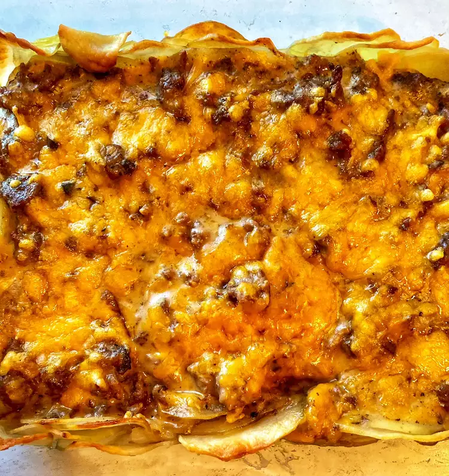

Homepage
Cheesy Ground Beef and Potatoes

This ground beef and potatoes recipe is best described as comfort food.
With the cheesy ground beef layered atop a bed of buttery potatoes, you will keep coming back for more.
I use a mandoline to thinly slice the potatoes
- nonstick cooking spray
- 3 cups thinly sliced, peeled potatoes
- 2 tablespoons butter, melted
- ½ teaspoon salt
- 1 pound ground beef
- 1 (10.5 ounce) can cream of mushroom soup
- 1 ½ cups shredded sharp Cheddar cheese, divided
- ½ cup milk
- salt and ground black pepper to taste
- Preheat the oven to 400 degrees F (200 degrees C). Spray a 9x13-inch casserole dish with nonstick spray.
- Place sliced potatoes in a large bowl. Pour melted butter over top and sprinkle with salt; mix until potatoes are thoroughly coated.
Line the bottom and sides of the prepared casserole dish with potatoes, overlapping as needed.
- Bake in the preheated oven until potatoes are fork-tender, 20 to 30 minutes.
- While the potatoes are baking, heat a large skillet over medium-high heat.
Cook and stir ground beef in the hot skillet until browned and crumbly, 5 to 7 minutes. Drain and discard grease.
- Transfer beef to a large bowl and add condensed soup, 3/4 cup Cheddar cheese, and milk. Season with salt and pepper and mix until well combined
- Remove potatoes from the oven. Pour beef mixture over top and return to the oven. Bake until heated through, about 15 minutes.
Sprinkle remaining Cheddar over top and bake until melted, 4 to 5 more minutes.